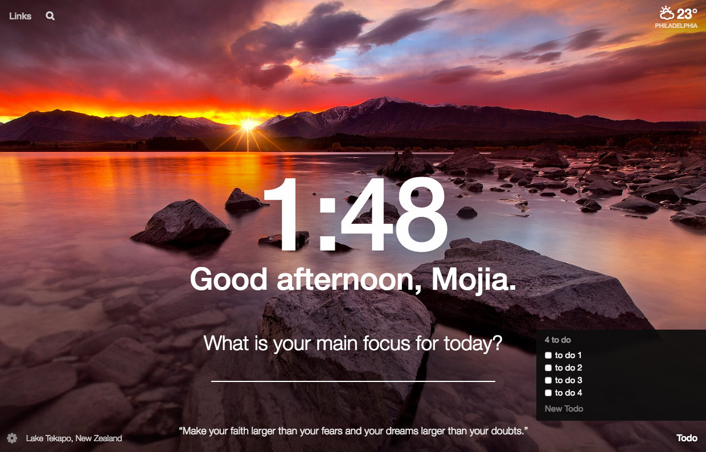

Have you ever regretted at the end of a day that you got nothing done? Do you complain that you don’t have enough time? Do you want to be more thoughtful and proactive?
I know how you are feeling. Often as entrepreneurs or ambitious college students, we want to maximize our time, learn as much as possible -- but lack tools or self-discipline to do so. Here are some of my recommendations to you as someone who have been through your struggles :-)
1. Be a morning person
Absorbed into our endless work and commitments, how much time do we really have for ourselves? Well, a quiet morning must be just what you need.
Meditate:
Meditation enables you to become more self-aware, and build a peaceful mind at the beginning of a day. With even only 5 min a day, you can start seeing a change in your life.
It’s never too late to start. If you are new to meditation, try Headspace. Its amusing animations and detailed instructions will get you started step by step.
Enjoy some silence and reflect:
After the meditation, open your eyes and appreciate your surroundings. Take a morning walk or run in silence and reflect on what you did yesterday, and how you plan to make better today.
Keep a to-do list:
Write down a to-do list. Break the to-dos into small, actionable tasks. The key is to make sure you check and clear them at the end of the day.
Here are some products to help you:
Momentum:
Momentum is a chrome extension that has a to-do list embedded. Since my browser is always on my radar, I am forced to keep track of my progress.
Todoist:
Downloading the Todoist app on your phone is a good idea as well.
Read:
Creativity is not a coincidence. Great ideas build upon other great ideas.
If you are interested in what others are thinking, read Medium. Select those you want to follow and your favorite topics, and then enjoy a thoughtful morning with original ideas.
The world is changing at an immeasurable speed. To keep up with it needs our conscious effort.
If you are into tech, try Product Hunt where you get to vote on the coolest ideas, read Hacker News with a technical focus or check out TechCrunch where you will be updated on the latest acquisition and tech news. If you are interested in the China tech scene, check out Chuangyebang, or 36kr (These are apps as well).
2. Need to commute? Make these your best friends
Podcast
Podcast is my best discovery last year. It allows you to gain exposure to interesting ideas with little to no effort. Some podcasts I recommend are YC’s Startup School Radio, Product Hunt Daily Top Podcasts, Freakonomics, NPR Invisibilia, Exponential Wisdom, the Mumbly Hour, Traction etc.
Audible
Don’t want to read, but enjoy listening? Suffering from ADD? Listen to audiobooks on Audible is almost the best choice.
Buy a Kindle or download the Kindle apps
Suddenly you have a million books in hand and a whole new world of thoughts in front of you.
3. The NOT to-dos
No social media or email in the morning
It’s almost too easy for us to check our snapchat, facebook and email in order as the first thing in the morning. Please stop yourself from doing that.
Our brain is the most active in the morning, so do not waste it on no-brainers. Instead, read, write, or chat with someone.
Only check messages or emails between commitments when you have small chunks of time.
Use email apps such as Spark to filter your emails into new emails, notifications, newsletters, pins, etc
No negative news in the morning
I used to read CNN and BBC every morning. But soon I discovered how much negativity it has implanted in my mind. Major news sources get their views from news that have emotional impact. Yet negative news makes us feel sad, angry or hopeless. It’s absolutely the worst way to start your morning.
There are thousands of tools out there that serve us to be a better version of ourselves, but they are only effective if we decide to actively use them, and make good practices into habits.
Hopefully these tips will help you develop more productive days and a life pursuing passion and purpose. Please share the tools or habits you have! Knowledge only becomes powerful when you share :)